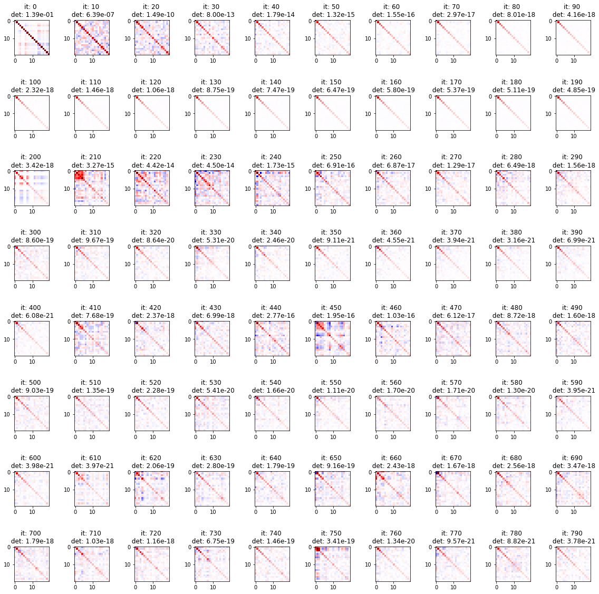
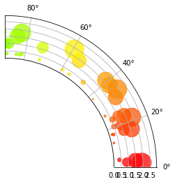

[19]:
import hmc_tomography
import numpy, tqdm
import matplotlib.pyplot as plt
from mpl_toolkits.axes_grid1.axes_divider import make_axes_locatable
[2]:
dimensions = 20
[3]:
def unit_vector(dimension, dimensions=dimensions):
v = numpy.zeros((dimensions, 1))
v[dimension] = 1.0
return v
def construct_H(mass_matrix):
rows = []
for dim in range(mass_matrix.dimensions):
rows.append(mass_matrix.H(unit_vector(dim)).T)
return numpy.vstack(rows)
def construct_SIGMA(mass_matrix):
rows = []
for dim in range(mass_matrix.dimensions):
rows.append(mass_matrix.Hinv(unit_vector(dim)).T)
return numpy.vstack(rows)
def construct_DIAGONAL(mass_matrix):
entries = []
for dim in range(mass_matrix.dimensions):
entries.append(mass_matrix.Hinv(unit_vector(dim))[dim])
return numpy.array(entries)
[4]:
means = numpy.ones((dimensions, 1))
variances = numpy.arange(dimensions)[:, None] + 1
normal_dist = hmc_tomography.Distributions.Normal(means, variances)
/home/larsgebraad/Documents/Hamiltonian Monte Carlo/hmc-tomography/hmc_tomography/Distributions/base.py:378: Warning: Seems that you only passed a vector as the covariance matrix. It will be used as the covariance diagonal.
Warning,
[46]:
numpy.set_printoptions(precision=2)
mm = hmc_tomography.MassMatrices.LBFGS(
dimensions, number_of_vectors=200, max_determinant_change=0.1
)
iterations = 800
fig, ax = plt.subplots(int(iterations / 100), 10, figsize=(16, 16))
plt.tight_layout()
fig2, ax2 = plt.subplots(int(iterations / 100), 10, figsize=(16, 16))
plt.tight_layout()
numpy.random.seed(42)
for i in tqdm.trange(iterations):
location = 10.0 * numpy.random.randn(dimensions, 1)
gradient = normal_dist.gradient(location)
mm.update(location, gradient)
if i % 10 == 0:
ix = int(i / 100)
iy = int((i % 100) / 10)
C = construct_SIGMA(mm)
ax[ix, iy].imshow(
C, vmin=-dimensions, vmax=dimensions, cmap=plt.get_cmap("seismic")
)
ax[ix, iy].set_title(f"it: {i} \n det: {numpy.exp(-mm.logdet()):.2e}")
H = construct_H(mm)
im2 = ax2[ix, iy].imshow(H, vmin=-1, vmax=1, cmap=plt.get_cmap("seismic"))
ax2[ix, iy].set_title(f"it: {i} \n det: {numpy.exp(mm.logdet()):.2e}")
# ax2_divider = make_axes_locatable(ax2[ix, iy])
# # add an axes above the main axes.
# cax2 = ax2_divider.append_axes("right", size="10%", pad="10%")
# cb2 = plt.colorbar(im2, cax=cax2, orientation="vertical")
100%|██████████| 800/800 [00:09<00:00, 83.42it/s]


[26]:
plt.imshow(construct_H(mm))
plt.colorbar()
[26]:
<matplotlib.colorbar.Colorbar at 0x7f7db062cdd8>

[43]:
numpy.linalg.det(construct_H(mm)) - numpy.exp(mm.logdet())
# fucking a
[43]:
0.0
[39]:
analytical_H = numpy.linalg.inv(numpy.diag(variances[:, 0]))
plt.imshow(analytical_H)
plt.colorbar()
plt.title(f"det: {numpy.linalg.det(analytical_H):.2e}")
[39]:
Text(0.5, 1.0, 'det: 4.11e-19')

[ ]:
analytical_H = numpy.linalg.inv(numpy.diag(variances[:, 0]))
plt.imshow(analytical_H)
plt.colorbar()
plt.title(f"det: {numpy.linalg.det(analytical_H):.2e}")
[35]:
import math
f"{math.factorial(20):.2e}"
[35]:
'2.43e+18'
[61]:
import numpy as np
import matplotlib.pyplot as plt
# Fixing random state for reproducibility
np.random.seed(19680801)
# Compute areas and colors
N = 150
r = 2 * np.random.rand(N)
theta = 2 * np.pi * np.random.rand(N)
area = 200 * r**2
colors = theta
fig = plt.figure()
ax = fig.add_subplot(111, polar=True)
c = ax.scatter(theta, r, c=colors, s=area, cmap='hsv', alpha=0.75)
ax.set_rorigin(-7.5)
ax.set_theta_zero_location('W', offset=180)
ax.set_thetamin(0)
ax.set_thetamax(90)

[ ]: